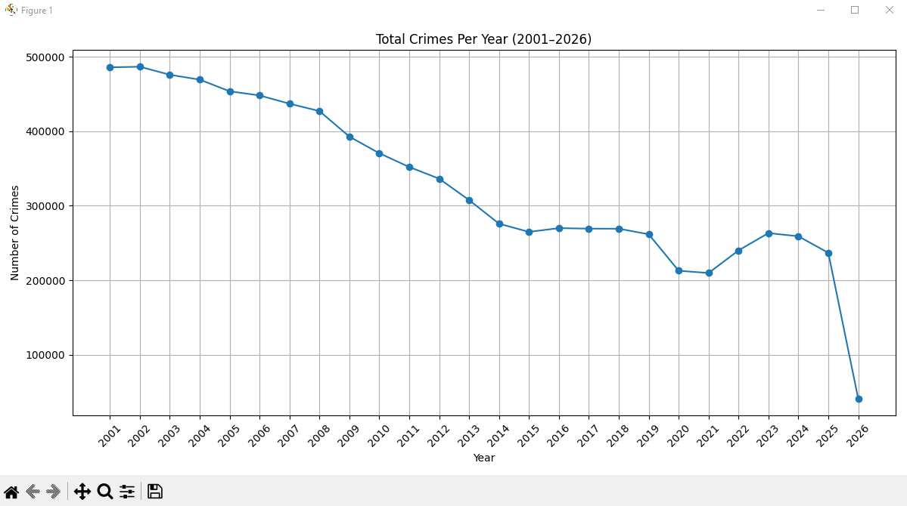

Research Question: How has the total number of crimes changed over the years?
The total number of crimes is decreasing over the years. The early 2000s saw the most criminal activity,
but then a consistent drop occurred, reaching a low around 2020.
Although there is a slight increase in recent years, the overall data indicates a reduced amount of crime over time.
Year | Number of Crimes
------------------------
2001 | 485961
2002 | 486831
2003 | 475999
2004 | 469443
2005 | 453789
2006 | 448198
2007 | 437109
2008 | 427217
2009 | 392866
2010 | 370567
2011 | 352057
2013 | 307616
2015 | 264891
2016 | 269963
2017 | 269287
2018 | 269155
2019 | 261707
2020 | 212712
2021 | 209667
2022 | 240020
2023 | 263292
2024 | 259037
2025 | 236808
2026 | 40810
Mission: Is crime increasing or decreasing? We need to visualize the trend of crime volume per year.
The number of crimes is decreasing over time with a significant amount from 2001 to 2014 followed by a period of stability,
another drop occurs around 2020–2021 with a slight increase afterward, and a sharp decline in 2026 which is due to incomplete data rather than an actual decrease.
